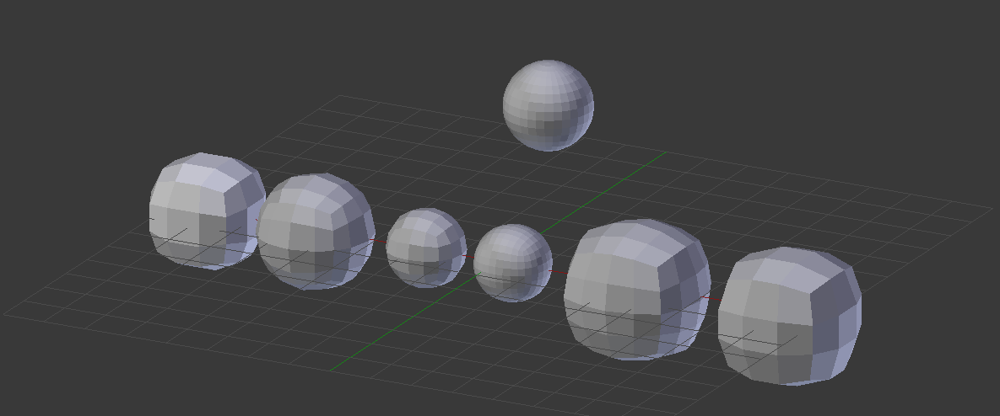
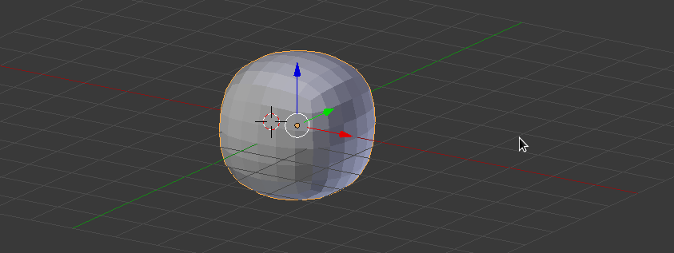
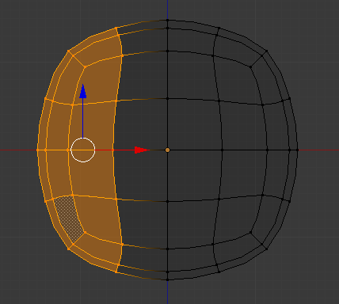
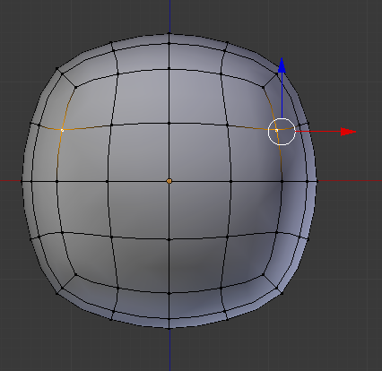
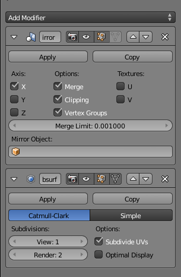
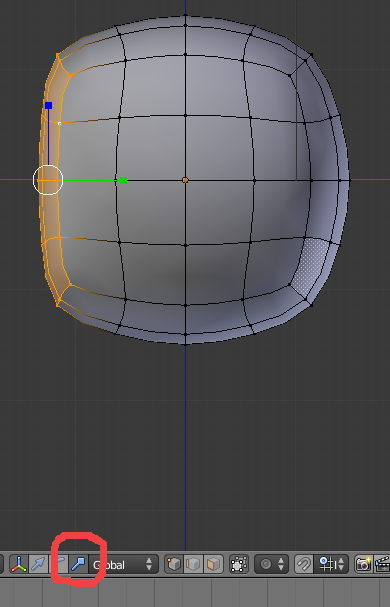

Blender – Modelar uma personagem humanóide
Vamos começar por modelar uma cabeça a partir de um cubo... Porquê? Veja os exemplos abaixo e leia a respetiva legenda (da esquerda para a direita).
1- Cubo com Subdivide (2 cuts). Depois utilizámos ferramenta To Sphere (Mesh > Transform). 56 vértices e 54 faces.
2- Cubo com Subdivide (3 cuts). Depois utilizámos ferramenta To Sphere (Mesh > Transform). 98 vértices e 96 faces.
3- Cubo com modifier Subdivision Surface com View a 2 (não foi feito Apply). 8 vértices e 6 faces.
4- Cubo com modifier Subdivision Surface com View a 2 aplicado e novo modifier Subdivision Surface com View a 1 (não foi feito Apply a este segundo modifier). 98 vértices e 96 faces.
5- Cubo com Subdivide Smooth (3 cuts). Em Edit Mod, menu W. 98 vértices e 96 faces.
6- Cubo com Subdivide Smooth (2 cuts). Em Edit Mod, menu W. 56 vértices e 54 faces.
Esfera: Uma UV Sphere com 482 vértices e 512 faces.
Para além do maior número de vértices e faces, que implica maior dificuldade e complexidade na modelação, a esfera apresenta 32 triângulos (topo e base) e poles (vértice que não está ligado a 4 arestas). Uma geometria com faces triangulares e poles torna-se mais vulnerável a erros ou problemas de modelação e animação. Os triângulos não reagem bem a operações que impliquem distort/smooth. Nem sempre é possível evitar totalmente triângulos e poles mas é uma regra geral para uma modelação mais eficaz e “limpa”: evitar triângulos e poles, caso seja mesmo necessário esconder da vista (atrás da orelhas, na axilas, etc.).
1. Cabeça
Aplique um Subdivide Smooth (Em Edit Mode, clique no W) com 3 cuts. Aplique um modifier Subdivision Surface com View a 1 (não faça Apply!).Clique no ícone para o modifier envolver a malha em Edit Mode .Clique em Smooth (Shading) no painel de Tools.

2. Em visão frontal, selecione os vértices do lado esquerdo (não selecione os do centro!) e apague-os. Aplique um modifier Mirror. Ative a opção Clipping para evitar que os vértices atravessem o centro (vão unir-se em vez de atravessar) e troque a ordem para o Mirror ser feito antes do Subdivision Surface. Repare nas diferenças no topo da cabeça quando troca a ordem dos modifiers.
  3. Em visão lateral, selecione os vértices que constituem a cara. Ative o widget de Scale e mova o mesmo de forma a alinhar os vértices, “endireitando” a cara.
